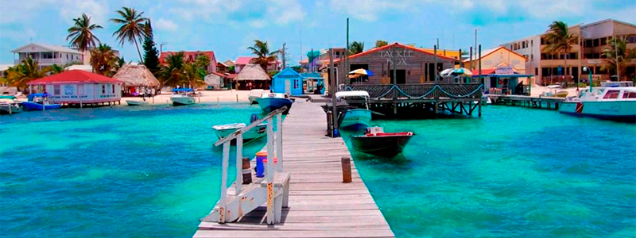
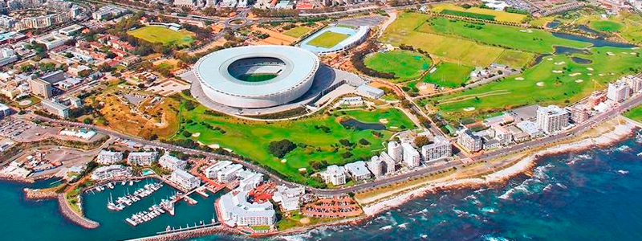

Roteiros Internacionais
Roteiros turísticos internacionais para os mais variados destinos nos cinco continentes, com tarifas especiais e todo o conforto e praticidade que você merece: aproveite a comodidade e a rapidez de ter tudo resolvido para você na hora de viajar!
América do norte
A América do Norte é muito diversificada, ela vai desde praias paradisíacas, reservas naturais e monumentos históricos, até a atmosfera urbana das metrópoles, passando por cidades que são consideradas parada obrigatória para quem deseja fazer compras. Há muito o que explorar na América do Norte! Um lugar recheado de diversão, mas que também oferece relaxamento, cultura, passeios temáticos e muito mais.
América central
A América Central sempre foi um destino um tanto quanto exótico e relativamente desconhecido para nosso País, apesar não ser muito conhecido, o continente é uma verdadeira festa para os olhos: paisagens belíssimas e uma natureza privilegiada dividem espaço com atividades culturais, atrações curiosas e uma diversidade sem igual.
América do sul
Para conhecer melhor o mundo, o latino-americano deve começar por sua própria casa, no caso pela América do Sul. Escolher a América do Sul como destino da próxima viagem é garantia de encontrar lugares fascinantes. De praias a desertos, de ilhas a cidades históricas passando por sítios arqueológicos de importância histórica única, acredite, não faltarão opções para você.
Europa

Quem nunca sonhou em conhecer o velho continente? A Europa é famosa pelos seus países cheios de história, cultura e belezas naturais. O turismo na Europa é bastante diversificado. O continente oferece opções de destinos tanto para os amantes de história e cultura, como para quem quer admirar paisagens magníficas. Lá estão as cidades mais charmosas e históricas do planeta. Já No interior do continente estão as paisagens: campos de flores, colinas e lagos, que dividem espaço com impressionantes castelos.
Ásia
É o maior continente do mundo tanto em tamanho quanto em população e, por causa da grande diversidade de países e culturas, esse é o destino certo para quem quer conhecer lugares realmente novos e diferentes. É ideal para conhecer lugares exóticos e inusitados, com outra cultura, aproveitar um sol e mar de águas limpas e transparentes, ir para festivais totalmente diferenciados do que você está acostumado ou até mesmo exercitar sua espiritualidade.
África
Se você tem um espírito aventureiro, quer arrumar as malas e partir para uma nova viagem, deseja conhecer novos lugares e quer criar memórias inesquecíveis, a África é o seu destino. Você precisa pensar na possibilidade de conhecer a África, com certeza, as opções desse continente vão lhe surpreender. ele é repleto de países imperdíveis e cheios de possibilidades de programas únicos que você precisa conhecer, suas terras lindas e extensas, a natureza bela e exuberante e sua fauna totalmente diferenciada, incomparável, marcarão para sempre a sua imaginação.
Oceania
O menor dos continentes é, também, um dos mais versáteis destinos a ser desbravado, tanto para quem prefere uma boa estrutura e muito conforto para aproveitar o sol e o mar nas viagens, quanto para os mais aventureiros, que preferem mochila nas costas e muito passeio. Este pequeno continente possui lugares maravilhosos, paisagens incríveis que valem uma viagem.